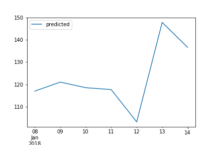

Here Are Your Results for Last Week
| Actual Followers Added | Predicted Followers Added | Hours Streamed |
|---|---|---|
| {{ the_result['actual_total'].values[0]}} | {{ the_result['pred_total'].values[0]}} | {{ the_result['hours_streamed'].values[0] }} |
| Last Week | This Week |
|---|---|
|  |